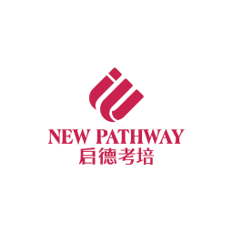
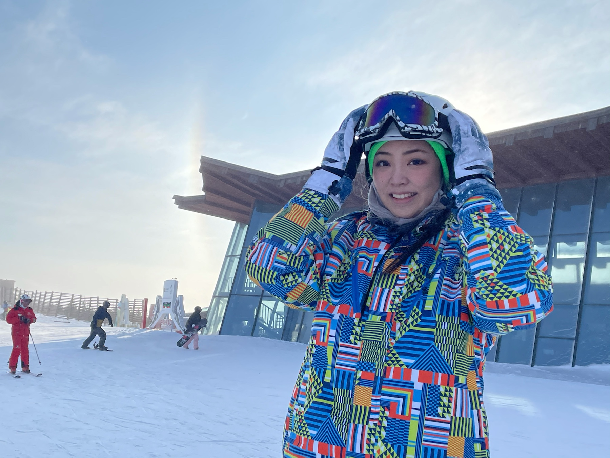

Self Introduction
Hello! Welcome to my webpage! This website provides a little bit more detail of me. I am from Shanghai, China, born and raised here! Below is a summary of my personal educaitonal background and experience. Simplly put, I attended high school at Lake Forest Academy in Lake Forest, Illinois. After that, I am now a Junior student at Georgetown University McDonough School of Business. I major in Finance and Operations & Information Management, and I minor in Psycholgoy. I am passionate about Finance, so I have also done a few internships during summers. Now this is my first-ever personal website, I am very excited to make this happen! Please enjoy!
Educational Background

Georgetown University, McDonough School of Business
2018-Current
Lake Forest Academy, High School
2014-2018
Work Experience (Internships)
Fintech Financial Analyst, Intern
Summer 2020
Financial Analyst, Intern
Summer 2019

Teaching Assistant, Intern
Summer 2018
During summer 2018, I worked as New Pathway Educatino as a Teaching Assistant. I was responsible for preparing English content and course design to help middle & high schoolers to improve English.
During summer 2019, I interned at Financial Institutions Group at Bank of China. I was mainly in charge of compiling conference minutes, conducting risk analysis, and building financial models. This was my first internship related to my major.
During summer 2020, I was at OneConnect (OCFT) as a Fintech Financial Analyst. My main duties were connecting with clients, supplying them with details of our reports, writing financial reports with simple models I built, and basically promoting our Fintech products, such as technologies and platforms, to medium/large banks.
Interests & Fun Facts about me

- Skiing (I actually just went on a ski trip the past Christmas break!)
- Leisure Reading (not for school haha)
- Skydive (never tried it before but am eager to do so)
- Hiking
- Video Editing
- Softball
- Cross-Country Running
- ...